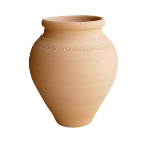
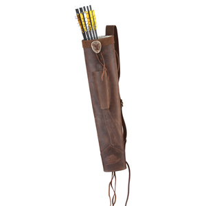

ⲙⲟⲕⲓ B nn m, jar, vessel, quiver, container generally: Deu 23 25 (S ϩⲛⲁⲁⲩ), Am 8 1 (SA do) ἄγγος, Ge 42 25 a (var ⲥⲟⲕ), Lev 14 5 (S = Gk), Is 30 14 (S ϩ., F = Gk), Mt 25 4 (S ϩ.) ἀγγεῖον; Jer 19 1 (S = Gk) βῖκος; Mt 26 7 (SF = Gk) ἀλάβαστρον; Pro 9 2 (var & A = Gk, S ϩ.) κρατήρ; Va 61 24 drank from ⲡⲓⲙ. ⲙⲙⲱⲟⲩ λαγήνιον (var κάλπιον); ib 220 Samuel's oil horn (1 Kg 16 ⲧⲁⲡ); Ex 25 29 ⲙ. ⲛⲟⲩⲱⲧⲉⲛ ⲉⲃⲟⲗ σπόνδιον; Ge 42 25 b σάκκος; ib 27 3, Ps 10 2 (S ϩ. ⲛϯ ⲥⲟⲧⲉ), Is 49 2 (S ϩ. ⲛⲕⲁ ⲥ.) φαρέτρα; Ex 16 23, 32 (S om) ἀποθήκη; Lev 15 12 σκεῦος, cf C 89 136 ⲛⲓⲙ. at banquet = ib ⲛⲓⲥⲕⲉⲩⲟⲥ = Bor 296 148 S ⲁⲅⲕⲏⲛ (ἀγγ.); HCons 451 ⲡⲓⲙ. ⲛⲧⲉ ⲡⲓⲙⲩⲣⲟⲛ وعاء, K 147 ماعون، اناء، وعاء; Rec 6 180 ⲟⲩⲙ. of water = BMar 215 S ϩⲛⲁⲩ, MIE 2 398 sim = BAp 97 S ⲛⲕⲁ, C 41 77 ⲡⲁⲓⲙ., ib later ⲡⲓⲗⲁⲕⲟⲛ, MG 25 191 ⲙ. of glass, C 86 283 ⲙ. shaped like iron tube (χώνη).
(noun male)
container
jar, vessel, quiver, container generally [αγγειον, βικος, αλαβαστρον, κρατηρ]


complete
161b
See also:
| view | ⲕⲉⲗⲱⲗ, ⲕⲟⲩⲗⲱⲗ SB ⲕⲟⲗⲟⲗ S ⲕⲉⲗⲟⲗ B female: ⲕⲉⲗⲟⲗⲓ, ⲉⲕⲗⲟⲗⲓ B plural: (?) ⲕⲉⲗⲟⲟⲗⲉ S | (noun male) pitcher, jar [βαυκαλιον]792 |
| view | ⲥⲓⲣ B | (noun) jar1460 |
| view | ϭ(ⲉ)ⲗⲙⲁⲓ, ϭⲉⲗⲙⲁ, ⲕⲉⲗⲙⲁ, ϭⲁⲗⲙⲁ, ϭⲉⲗⲙⲏⲛ, ⲕⲩⲗⲙⲁⲛ S ϭⲉⲗⲙⲁⲉⲓⲛ SfF ϫⲓⲗⲙⲓⲛ F ϭⲗⲙⲉⲉⲓ NH | (noun male) jar, vase [σταμνος]2544 |
| view | ⲙⲁⲩⲣⲉⲥ, ⲙⲁⲩⲣⲏⲥ, ⲙⲁⲣⲓⲥ B | (noun female) jug, jar1097 |
| view | ⲕⲏⲃⲓ, ⲕⲁⲃⲓ B | (noun female) jar, pitcher2803 |
| view | ⲗⲓⲕ SB | (noun male) pot, jar948 |
| view | ϣⲟϣⲟⲩ SB ϣⲁϣⲟⲩ SLF ϣⲟϣⲟ S | (noun male) pot, jar [κεραμιον]2022 |
| view | ϩⲟ(ⲟ)ⲙⲉⲥ S | (noun) water-jar (?)3266 |
| view | ⲥⲓⲧⲉ SAL ⲥⲓϯ BF ⲥⲏϯ F ⲥⲉⲧ- SBF ⲥⲁⲧ- SB ⲥⲓⲧ- S ⲥⲏⲧ- F ⲥⲁⲧ⸗ SB ⲥⲉⲧ⸗ SF ⲥⲓⲧ⸗ S ⲥⲏⲧ† SF ⲥⲏϯ†, ⲥⲁϯ† B | (verb) intr: throw, sow (oftener) & related meanings [σπειρειν, βαλλειν]
tr: [σπειρειν, ριπτειν]91 |